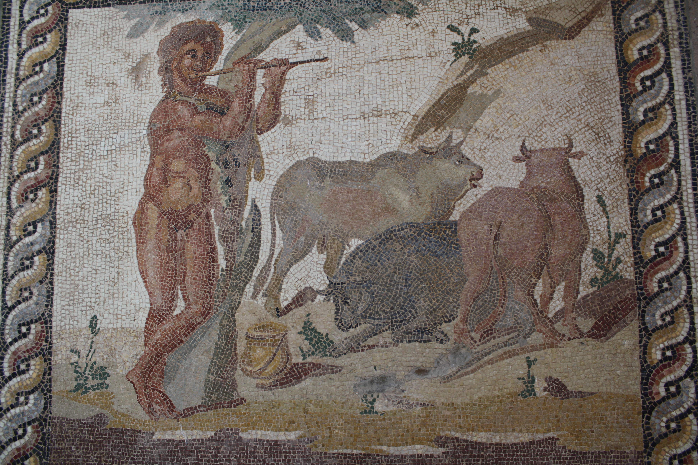

La stôria di una vacca
Ero passavo sula strâta dil'oppîdio mîo di locâl, et pos vêdaj una vacca quo era in vendita sula plâza publica. Is êmaj per dûecent denari, quo mi et la familija ma potsivamo aver qual di laite onji maitsîno

world history
Di me:
La aitsivite favorîte me
- nâtar
- manjar
- lûdar an compûtador
La artsiste favorîte me
- Karol G
- Stefano Syzer Germanotta
- Takagi & Ketra